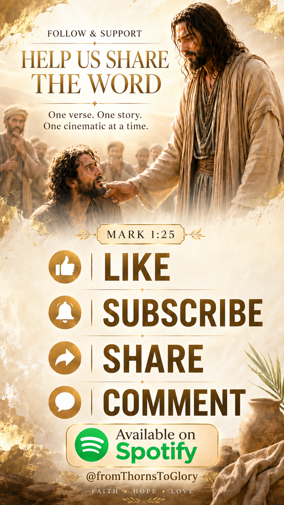
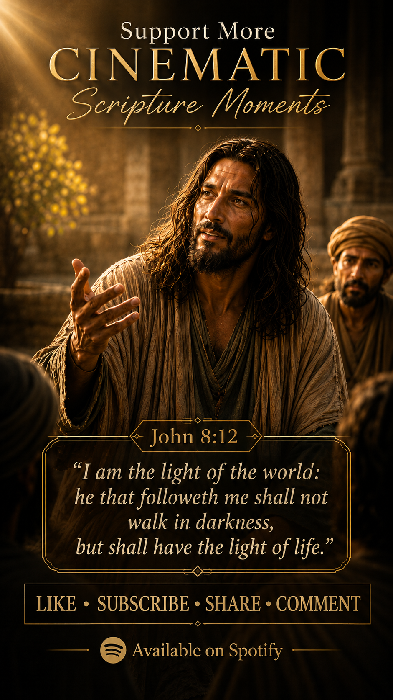
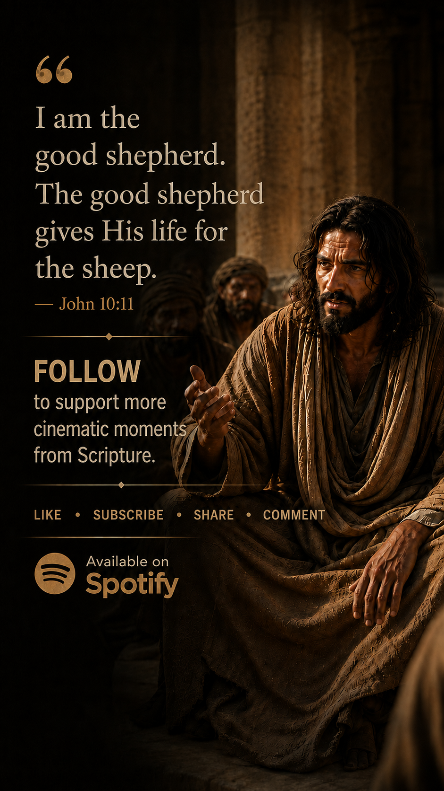
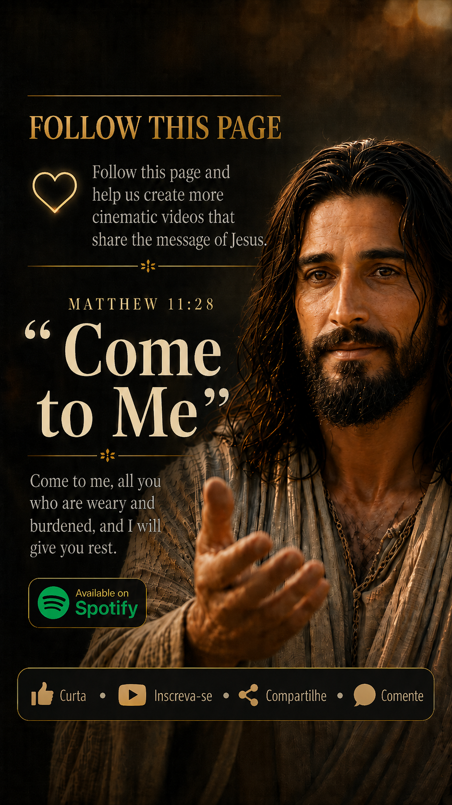

Jesus inspired social stories
fromThorns ToGlory
Cinematic scripture shorts, worshipful visuals, and simple reminders that the grave is empty and hope still speaks.
Latest stories
New scripture moments from the current short series.
The newest releases move through deliverance, the cross, light, rest, and the Shepherd's care. Each story is shaped for vertical video with bold imagery, worshipful music, and clear faith-centered messaging.
The Hidden Treasury
Deliverance speaks with authority.
Jesus rebukes the unclean spirit and sets the captive free.
It is finished.
The cross becomes the place where mercy completes the work.

I am the light of the world.
A cinematic reminder that the one who follows Him will not walk in darkness.

The good shepherd gives His life.
A quiet story of protection, sacrifice, and being known by the Shepherd.

Come to Me.
A call to the weary and burdened, carried with warmth and rest.

Resurrection and life.
The empty tomb remains the visual heartbeat of the page.
Music
Known By Love
Stream the latest music from fromThornsToGlory directly from Spotify.

Visual identity
Gold light, red thorns, and the road from death to life.
The artwork leans into contrast: darkness against glory, thorns against a crown, the cross against sunrise. It gives the social page a recognizable language before the first caption is read.
The mission
Faith visuals for people scrolling through heavy days.
fromThornsToGlory turns Scripture into short, cinematic moments built for social media: a resurrection scene, a healing touch, a road lit by mercy, a reminder that Jesus meets us in the place we thought was finished.
The page is designed to encourage, invite prayer, and make the gospel feel visually alive in the middle of everyday feeds.

Social media
Follow, share, and help the next video reach more hearts.
Use the same handle everywhere for a clear search signal: @fromThornsToGlory. Listen on Spotify and Apple Music, follow the YouTube channel, and share the latest faith-filled shorts.